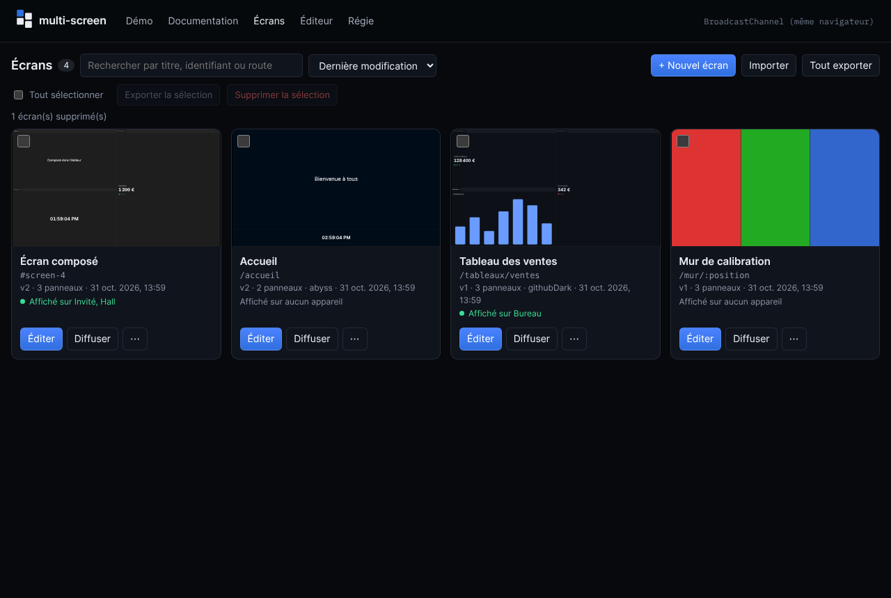
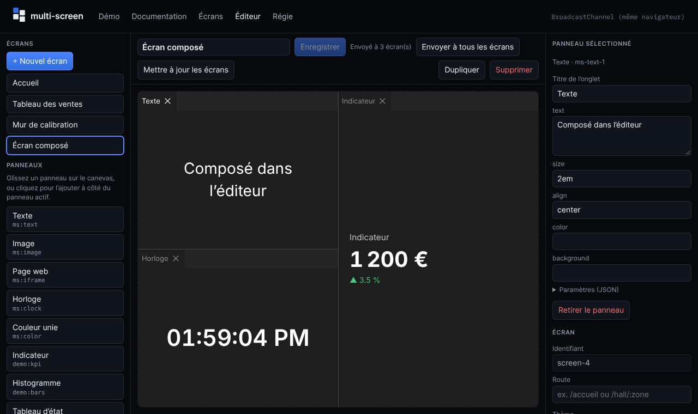
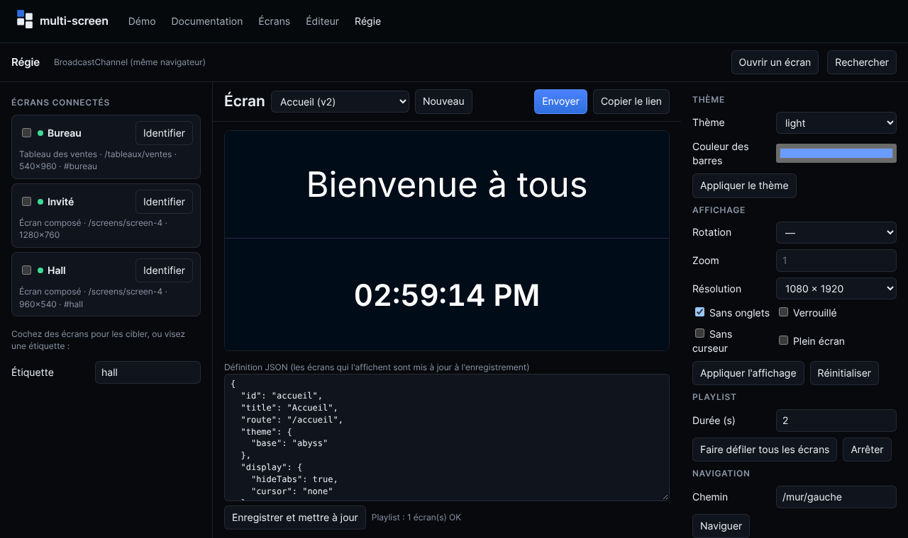

v0.1 · TypeScript · dockview · MIT
Un écran est une donnée.
Un écran est une donnée.
Composez-le, routez-le, diffusez-le.
multi-screen décrit chaque écran en JSON, à partir de panneaux dockview. Ses routes se créent à l'exécution. Une régie l'envoie à n'importe quel appareil, le met à jour en direct et règle à distance son thème et son affichage.
01
Les appareils rejoignent le bus et s'annoncent.
createScreenDevice({ transport, info: { name: 'TV Hall', tags: ['hall'] } })
hub
Protocole
0 messages
0 o échangés
dernier patch — vs écran complet —
0dépendance de framework
4transports fournis, un contrat de 2 méthodes
18thèmes dockview par leur nom
92tests, plus un parcours complet dans Chromium
01 · Le modèle
L'écran est un document JSON, versionné et diffusé par patch.
Bougez le curseur « Chiffre d'affaires » de la démo : la régie calcule un JSON Merge Patch, l'envoie aux appareils qui détiennent l'écran, et seuls les paramètres du panneau changent. Rien n'est recréé.
Écran
ventesv1#Dernier message
screen/patch—- Validé à la réception : identifiants, routes, thèmes, affichage.
- Empreinte FNV-1a du contenu : un appareil qui a divergé reçoit l'écran complet.
- Accusé de réception pour chaque commande : on sait qui n'a pas reçu.
02 · Routage dynamique
Des routes créées, remplacées et retirées pendant l'exécution.
Le ScreenRouter repose sur history et path-to-regexp. Essayez : ajoutez une route, tapez une adresse, retirez une route. La correspondance se recalcule aussitôt.
Table des routes ordre de correspondance
Adresse
03 · Architecture
Un cœur sans framework, des couches que vous remplacez.
Chaque couche ne dépend que de celle du dessous. Stockage, transport, routeur, panneaux et autorisation sont des points d'extension.
Intégrations
ReactreactPanel · hooks
Web ComponentselementPanel · Lit, Vue, Svelte
NodeScreenHub sans navigateur
Relaisnpx multi-screen-relay
Rendu
multi-screen/dockviewScreenViewmises à jour incrémentales
Outletrouteur + store + vue
Éditeurpalette · canevas · inspecteur
Gestionnairetous les écrans créés
Cœur
multi-screenScreenStoreversionné · observable
ScreenRouterroutes à l'exécution
ScreenHub ↔ ScreenDeviceprotocole · accusés
Liens · Playlistspartage sans serveur
Transports
BroadcastChannelonglets d'un navigateur
WebSocketréseau · reconnexion
postMessageiframes · popups
signedTransportHMAC-SHA256 · anti-rejeu
Appareil affiche ce qu'on lui envoie
Régie compose et pilote
04 · Le film
60 secondes, entièrement générées par le code du dépôt.
Les données affichées viennent de la bibliothèque compilée : disposition de l'éditeur, versions, routes, messages relevés sur le bus et le patch de 64 octets.
05 · Applications de démonstration
Les composants de la bibliothèque, en vraie grandeur.
Ces pages partagent la même bibliothèque d'écrans et communiquent entre onglets. Ouvrez la régie ou le gestionnaire, puis un « Écran » dans un autre onglet.

ÉcransTous les écrans créés : miniatures vivantes, diffusion, import et export.
createScreenManager
ÉditeurGlissez des panneaux prédéfinis sur un canevas pour composer un écran.
createScreenEditor
RégieAppareils connectés, thème, affichage, navigation, playlist.
createScreenHubÉcran ↗Une page d'affichage, à ouvrir dans un nouvel onglet ou sur un autre appareil.
createScreenDevicePrêt à composer vos écrans ?
Installation, concepts, référence de l'API et exemples à copier-coller.